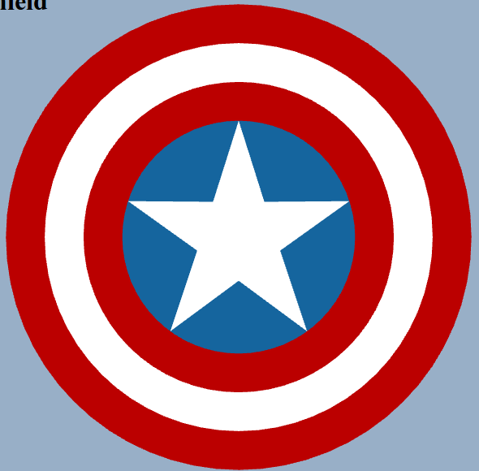

Computer Graphics Assignments
I have hosted the homework assignments online so that you can just hit them from a browser on any computer. Assignment 2 is located here, and assignments 3-7 are located here. I am still sending you the files so you can see the code, but you can and should view the actual running webGL from this URL. The reason is that when the page is viewed locally you can't load image files like the textures I am using--it needs to be hosted by a webserver.
Assignment 2
This can be found in the folder entitled "shield". Within is the shield that I showed during class, created with webGL. The image may seem simple, but drawing the star was actually rather involved, and what you see is actually my 5th or 6th attempt at creating it. 
Assignments 3-7
The rest of the homework assignments are all within the folder entitled "room", as that single folder contains the combined work from each of the individual assignments.
Assignment 3 - 3D Models {room, furniture, head}
In the project, there are six planes (making up the 4 walls, ceiling, and floor) which together serve to create the room. There are also six chairs, which fulfill the furniture requirement of the assignment, as well as a floating head which fulfills the head model requirement.
Assignment 4 - User Interaction
In this room, you can use the WASD keys to navigate the camera, the arrow keys to rotate the camera, and spacebar/c to relatively move the camera up/down respectively. This, along with the floating head following the camera as it moves, fulfills the requirements for this assignment.
Assignment 5 - Materials and Textures
The walls have been given a "wallpaper" sort of texture, the ceiling has been given a texture to make it look like a typical ceiling, and the floor has been given a checkered pattern, comparable to common marble floor tiles. The chairs have two different textures--one is a wooden crate texture for the backs and legs of the chairs, and the other is a solid brownish material to make the seats. There is also a transparent material given to the tube that the face floats in, and the face itself has several solid material textures.
Assignment 6 - Lighting
There are two lights in the scene. One in the north side and one in the south side of the room. Also the materials are all using a MeshLambertMaterial, which is what allows the light to affect them. Without these lights the scene is pitch-black, which can be apparent by moving the camera outside the walls. Since the are no lights outside the room, the outside walls are seen as black.
Assignment 7 - Animation
The creepy head in the center of the room slowly oscillates on it's vertical axis. Also as you move the camera around, the head's rotation updates to match that of the camera--effectively making it constantly watch the user.